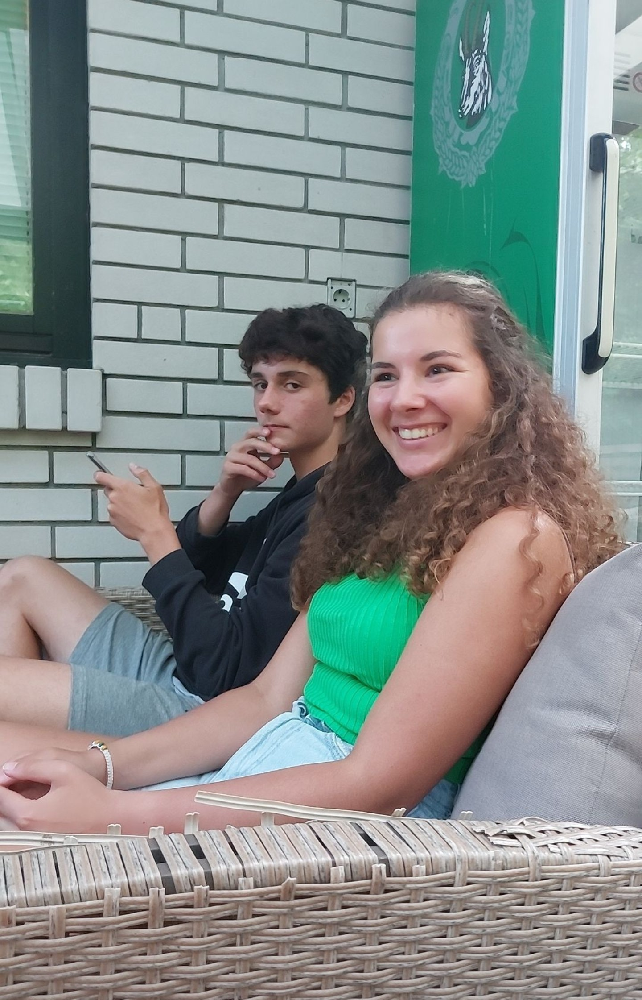
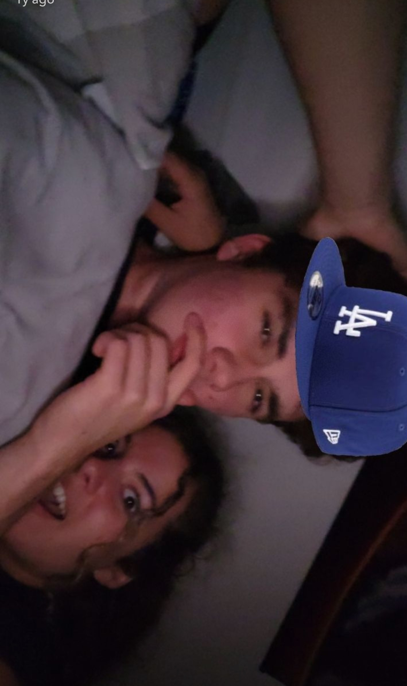
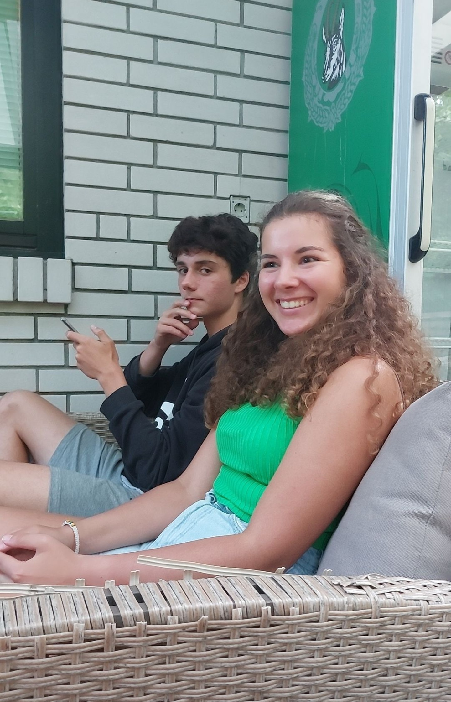
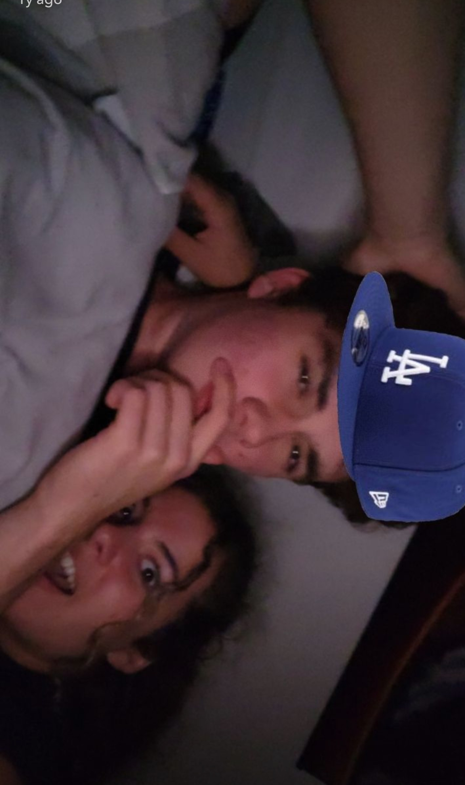
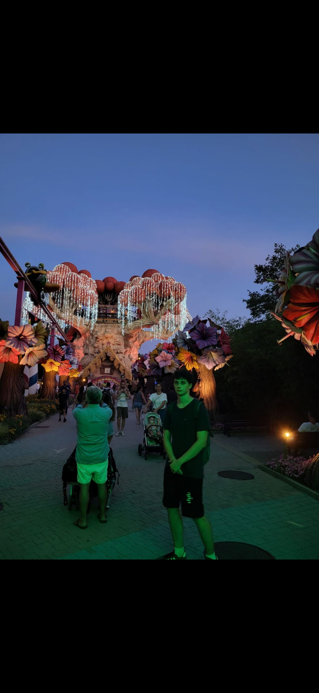
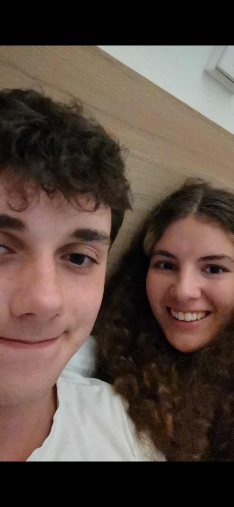
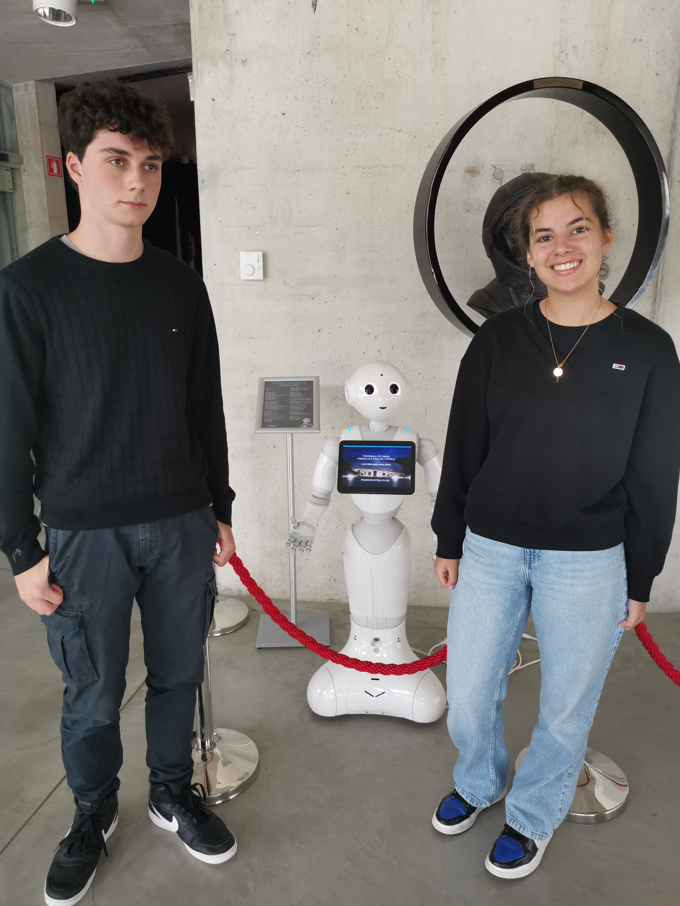
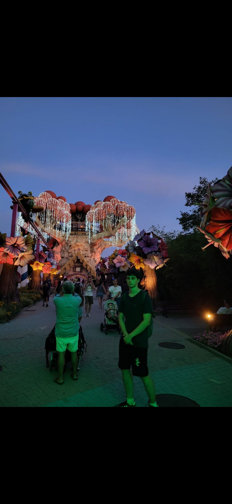
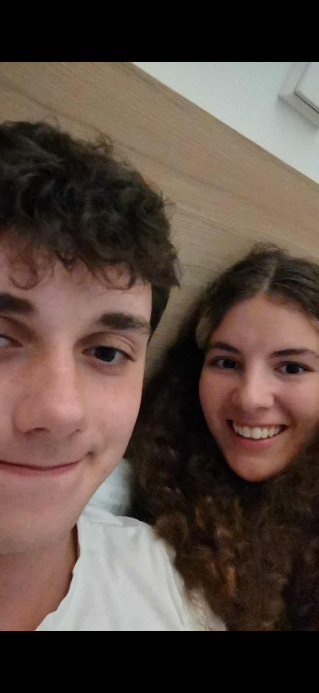
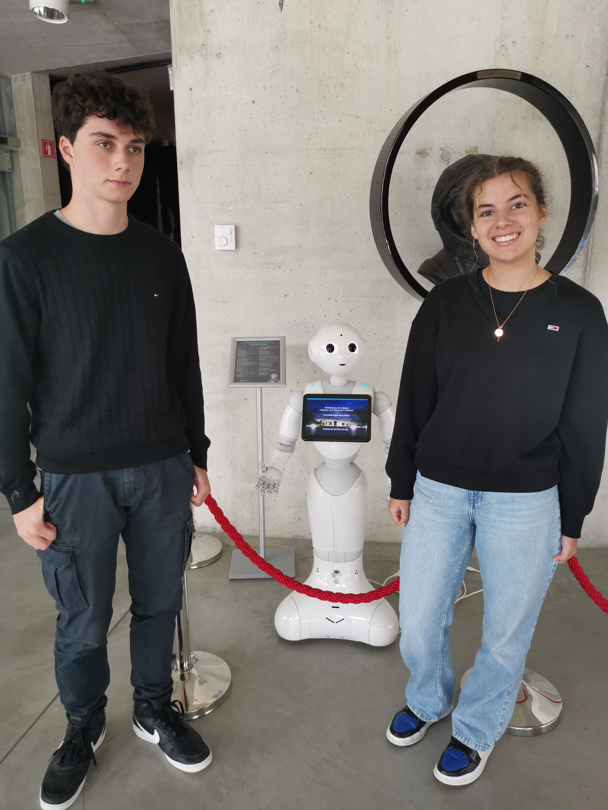

❤️ Za mojo Lenčiko ❤️
Ljubim te do lune in nazaj in še dle.
.jpg) 



 





Ti si mi vse.
Ti si men use. Žou mi je da ne moreš vedet kok te mam rad ker besede vsega tega ne morejo opisat. Ljubim te tok močno in ljubiu te bom za vedno...
Vesel božič in srečno 1,5 let obletnico.
Skupej sva že več kot 1,5 leta. V bistvu, če to gledaš 25.12 (kot bi mogla), sva skupej že točno 557 dni oziroma 13,368 ur oziroma 802 080 minut. Kljub temu se mi zdi, da sem s tabo manj kot en teden, zato ker, s tabo čas tako hitro mine. Ne predstavljaš si kok je men dobr bit s tabo kjerkol. Tok sm srečn da mam eno tko lepo prjazno punco in da si moja. Js te bom cenu in spoštovou za vedno ti moja lepotica. Ti maš najlepše lase, najlepši obraz, najlepšo ritko (in ostalo ;)) najlepša si cela. Ker niti predstavlas si ne tisi najbolsa v mojem svetu in na splosnem svetu. Niti en dan ni menil, da nebi pomislu nate. Niti en večer ni miniv, ne da bi te pogrešov in hotu zaspat s tabo ker si tok topla pa udobna. Najni spomini bojo živi za vedno. Komi cakam na vse stvari ka jih bova v prihodnosti še počela skupej. Vrjamem in vem, da bova uresničla vse najne želje in cilje. Upam da ti je ta del darila všeč. Če prižgeš zvok se bo predvajala tvoja najljubša pesm (takrt ka sm to delu) lahko jo spremenim kadarkol če se jo naveličaš. Največji pomen te spletne strani je da si lahko kjerkoli to odpreva in pogledava in vidiva kok se mava rada in da nikol ne pozabva najnih spominov ker naju te še bol povezujejo in držijo skupej. Zato se mava tko rada in sva obsedena en z drugim. Ampak ne pozab da so spomini v glavi in da samo te štejejo. PS: to je nov način da se izognem lepopisu Tvoj možek Oskar Za njegovo ženkico Lano
PS: to je nov način da se izognem lepopisu